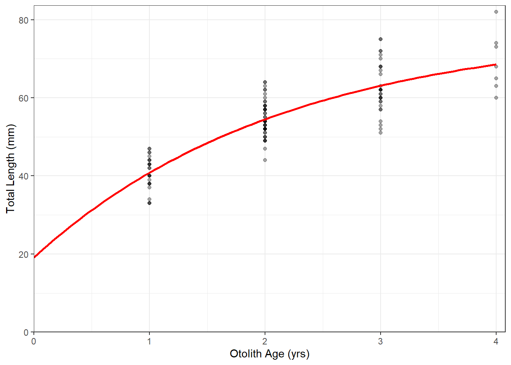

library(FSA)
library(tidyverse)
library(nlstools)
sculp <- read.csv("https://raw.githubusercontent.com/droglenc/FSAdata/master/data-raw/SculpinALTER.csv")
vbTyp <- vbFuns("Typical")
ggplot(data=sculp,mapping=aes(x=age,y=tl)) +
geom_point(color=col2rgbt("black",1/3)) +
stat_function(fun=vbTyp,args=list(Linf=coef(fitTyp)),color="red",size=1) +
scale_x_continuous(name="Otolith Age (yrs)",
limits=c(0,NA),expand=expansion(mult=c(0,0.02))) +
scale_y_continuous(name="Total Length (mm)",
limits=c(0,NA),expand=expansion(mult=c(0,0.02))) +
theme_bw(){:start=“9”} 1. The Gallucci-Quinn von Bertalanffy equation is \(E(L|t)=\frac{35.86}{0.46}(1-e^{-0.46(t--0.61)})\). 1. The growth of Slimy Sculpins near t0 is 35.86 mm/yr. The Brody growth coefficent, or the rate at which the mean length approaches the asymptotic mean length, is 0.46 year-1. The age at which the mean length is zero (i.e,. the x-intercept) is -0.61 years. 1. The common parameter estimates (for K and t0) between the two parameterizations of the von Bertalanffy are the same. This is because a parameterization is the same model, just with different parameters. 1. 35.86=77.8×0.461.
vbGQ <- vbFuns("GallucciQuinn")
svGQ <- vbStarts(tl~age,data=sculp,type="GallucciQuinn")
fitGQ <- nls(tl~vbGQ(age,omega,K,t0),data=sculp,start=svGQ)
bootGQ <- nlsBoot(fitGQ)
estsGQ <- cbind(Est=coef(fitGQ),confint(bootGQ))